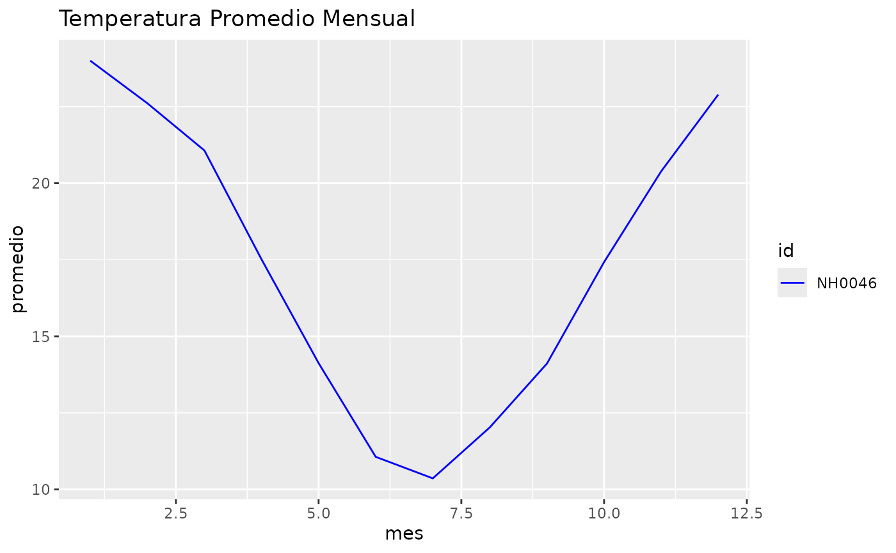

3️⃣ Introducción / propósito
Qué hace este paquete
El paquete meteoR permite trabajar con datos meteorológicos de estaciones, resumir estadísticas de temperatura y generar gráficos de manera sencilla.
Incluye funciones para:
- Convertir unidades de temperatura o longitud.
- Calcular estadísticas resumidas por estación o mes.
- Graficar la evolución de la temperatura por estación.
Ejemplos de uso:
Primero leemos los datos de las estaciones meteorológicas.
leer_estacion("NH0046", "datos/NH0046.csv")
#> el archivo ya existe en esa direccion, leyendo archivo...
#> Rows: 17041 Columns: 35
#> ── Column specification ────────────────────────────────────────────────────────
#> Delimiter: ","
#> chr (2): id, direccion_viento_1000cm
#> dbl (24): temperatura_abrigo_150cm, temperatura_abrigo_150cm_maxima, temper...
#> lgl (8): temperatura_inte_5cm, temperatura_intemperie_150cm_minima, humeda...
#> date (1): fecha
#>
#> ℹ Use `spec()` to retrieve the full column specification for this data.
#> ℹ Specify the column types or set `show_col_types = FALSE` to quiet this message.
#> archivo leido correctamente,
#> # A tibble: 17,041 × 35
#> id fecha temperatura_abrigo_150cm temperatura_abrigo_150cm_maxima
#> <chr> <date> <dbl> <dbl>
#> 1 NH0046 1973-01-01 27 33.6
#> 2 NH0046 1973-01-02 27.2 34.9
#> 3 NH0046 1973-01-03 25.2 29.6
#> 4 NH0046 1973-01-04 26.4 32.6
#> 5 NH0046 1973-01-05 26.0 31
#> 6 NH0046 1973-01-06 20.4 27.5
#> 7 NH0046 1973-01-07 24.8 28.9
#> 8 NH0046 1973-01-08 20.0 27.1
#> 9 NH0046 1973-01-09 23.8 32.7
#> 10 NH0046 1973-01-10 27.0 32.2
#> # ℹ 17,031 more rows
#> # ℹ 31 more variables: temperatura_abrigo_150cm_minima <dbl>,
#> # temperatura_intemperie_5cm_minima <dbl>,
#> # temperatura_intemperie_50cm_minima <dbl>,
#> # temperatura_suelo_5cm_media <dbl>, temperatura_suelo_10cm_media <dbl>,
#> # temperatura_inte_5cm <lgl>, temperatura_intemperie_150cm_minima <lgl>,
#> # humedad_suelo <lgl>, precipitacion_pluviometrica <dbl>, granizo <dbl>, …Ahora que tenemos un dataset llamado NH0472 con datos meteorológicos de una estación. (el usuario debe proveer sus datos o usar los incluidos en el paquete)
tabla_resumen_temperatura(NH0046)
#> # A tibble: 4 × 2
#> estadistica NH0046
#> <chr> <dbl>
#> 1 media 17.3
#> 2 desvio 8.77
#> 3 maximo 41.5
#> 4 minimo -15Tambien podemos graficar la temperatura promedio mensual con la siguiente funcion:
grafico_temperatura_mensual(NH0046)